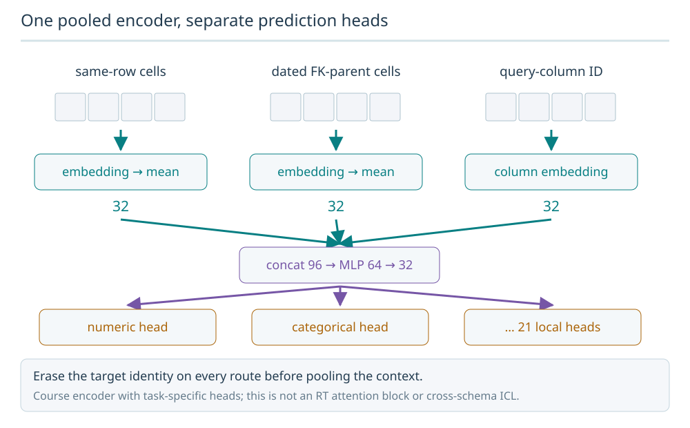
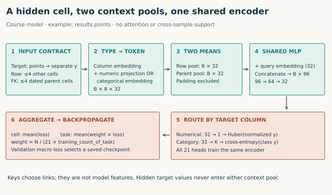
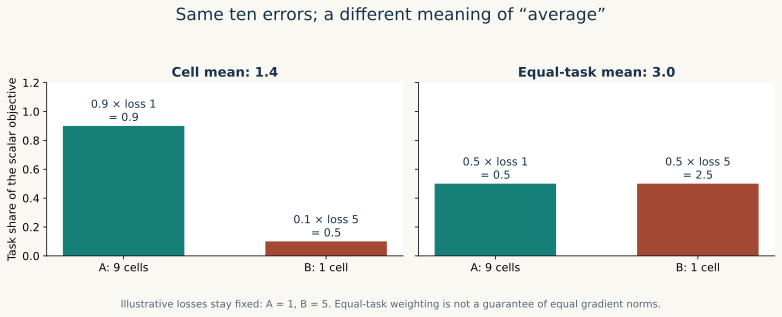
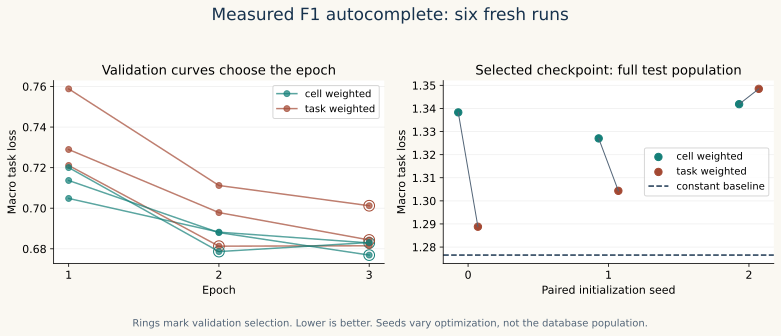

Year 5 · Quarter 2 · Lesson 173
Multi-task pre-training
One win: turn typed cells into a training objective, then explain why changing the averaging rule changes what the model learns. About 20 minutes for the lesson; run the lab separately.
Lesson 171: choose the corpus → Lesson 172: encode its cells → 173: decide what gets learned → Lesson 174: adapt the resulting encoder.
1 · A masked token is not yet a training example¶
Lesson 172 gave each cell a type, state and payload. It deliberately stopped before learning. Now separate three objects: input context contains permitted visible cells; target holds the hidden answer outside the model input; loss measures a prediction against that answer. A MASKED state alone does not prevent a join or a second reference from revealing the same target.
We build an autocomplete task for each eligible column, such as results.points or results.statusId. For every observed target cell, remove its identity from all context slots. Predict its value from up to four other eligible same-row cells and four eligible FK-parent cells. A numerical target is its normalized value; a categorical target is its local vocabulary class. Each eligible target appears once per epoch: we do not take a random 15% mask sample.
This is autocomplete, not forecasting. Other same-row fields may describe the same completed race and may almost determine the answer. Good reconstruction does not establish advance prediction. The packet also contains only one database; this is multi-task training, not evidence of a transferable foundation model.
2 · Four axes describe access to information¶
KumoRFM-2, §3 discusses row, column, foreign-key and cross-sample processing. These are not four scalar losses you can simply add. A model can access several kinds of context while optimizing one target loss.
| Information axis | Question it helps answer | This course model |
|---|---|---|
| Row | What do other fields say about this record? | Up to four other cells |
| Column | What patterns recur down this field? | No column-attention mechanism |
| Foreign key | What do linked records say? | Up to four dated parent cells |
| Cross-sample | What do labeled examples reveal about this task? | No ICL support mechanism |
The FK slots retain links through the schema, never use key IDs as magnitudes, and exclude untimed or future parent rows. Both row and FK slots are capped in a declared sorted order. That cheap deterministic policy can discard useful features; it is a course choice, not a learned selection algorithm.
3 · Model architecture: one encoder, many heads¶
Recall the building blocks. An embedding is a learned vector of numbers representing a column or category. A numerical projection multiplies a scalar value by learned weights to produce a vector. Pooling takes an average of visible vectors. A multilayer perceptron (MLP) applies learned linear transformations with nonlinear activations between them. A head is the final task-specific prediction layer; logits are its unnormalized class scores. Here B means the number of target cells processed together, and K is the number of classes for one categorical task.
Read the diagram left to right before reading the code. A token combines a column embedding with either a numerical projection or a categorical embedding. The model averages visible row and parent tokens separately. It combines both averages with the target column's embedding, then sends the shared representation to that column's head.
One pooled encoder, separate prediction heads
The course model pools same-row cells and dated foreign-key-parent cells separately. Their vectors and a query-column embedding concatenate to width 96, then a 96→64→32 MLP feeds 21 local task heads.

Predict: Is the target cell allowed to reappear through a context path?
No. Erase its identity from every context route. The model is a course pooled MLP with local heads, not the Relational Transformer attention architecture.
Answer: No. Erase its identity from every context route. The model is a course pooled MLP with local heads, not the Relational Transformer attention architecture.



For a batch of B target cells, context IDs have shape B × 8. Encoded tokens are B × 8 × 32. Two 32-wide means plus a 32-wide query make B × 96; the shared MLP maps 96 → 64 → 32. A numerical head returns one value. A categorical head returns K logits, one per local class including UNKNOWN. Padding contributes neither to the sum nor its denominator. An empty context pool is a zero vector.
The implementation is visible in the notebook: MaskedCellModel.forward builds tokens, pools two contexts and routes heads; cell_losses applies the appropriate criterion; train_run updates shared weights. Column embeddings and heads are local to these 21 tasks. Nothing here establishes cross-schema meaning.
Relational Transformer v1, §3.3 provides the primary objective reading: numerical Huber loss, boolean BCE, and a mean across masked cells. Our multiclass cross-entropy, pooled MLP, local column heads and equal-task comparison are declared course deviations. We do not implement RT attention or its pretraining schedule.
4 · A mean hides a policy decision¶
In plain terms. Averaging every cell gives frequently observed columns more influence. Averaging each column's loss first gives each task one vote. Choose the question you want the training objective to answer before choosing the average.
For numerical residual e, Huber with threshold 1 is 0.5 × e² when |e| ≤ 1, otherwise |e| − 0.5. This operates on the training-normalized target. Categorical cross-entropy is logsumexp(logits) − logit_of_correct_class. The losses have different interpretations even though both return scalars.
Let task t contain Nₜ training targets and have mean loss Lₜ. A cell mean is Σ Nₜ Lₜ / Σ Nₜ: large tasks receive more weight. An equal-task mean is Σ Lₜ / T: each task receives one vote. Neither is automatically right; both still depend on target normalization and task definitions.
Worked example: task A has nine cells with mean loss 1; task B has one cell with loss 5. Cell weighting gives (9 × 1 + 1 × 5) / 10 = 1.4. Equal-task weighting gives (1 + 5) / 2 = 3. The model has not changed; your definition of improvement has.


For uniformly shuffled training examples, assign each task-t example weight N / (T × Nₜ). Average the weighted losses over the minibatch. The expectation is the equal-task objective. Use frozen whole-training counts, not counts of tasks that happen to appear in that minibatch. In the example, an A cell weighs 10/18 and a B cell weighs 5. Their total weights are both 5. This balances scalar objective contributions, not necessarily gradient norms.
5 · Freeze the comparison before seeing test results¶
Named experiment: L173 F1 Multi-task Masked-cell Pretraining. We reuse the pinned nine-table F1 snapshot and Lesson 172's feature policies. Train before 2005, validate during 2005, and test from 2006 onward. These are course autocomplete splits, not the published RelBench forecasting task splits. Fit normalization and category vocabularies only on training rows. Keys, text, timestamps and every untimed table are excluded from predictive features and targets; the coverage ledger records every exclusion.
An observed held-out category absent from training becomes class 0, UNKNOWN. We count it in evaluation. Because no training target has that class, a low accuracy on unseen categories is a real vocabulary limitation, not a reason to refit on test data.
Six fresh fits compare two averaging rules at seeds 0, 1 and 2. Paired arms share initialization, target masks, permutation and batch order. Each fit runs three full epochs, batch size 1,024, Adam at 0.001, no weight decay. Both arms select the earliest checkpoint with lowest validation macro task loss. Only then do we score its full test population. All epoch checkpoints remain inspectable.
Complete: 370,024 targets across 21 tasks. Train / validation / test: 244,410 / 6,354 / 119,260.
| Loss weighting | Seed 0 test | Seed 1 test | Seed 2 test | Mean ± sample SD |
|---|---|---|---|---|
| cell | 1.338310 | 1.327036 | 1.341849 | 1.335732 ± 0.007736 |
| task | 1.288805 | 1.304340 | 1.348481 | 1.313875 ± 0.030960 |
All entries are test macro task loss (lower is better), even for the cell-weighted training arm. Training-only constant baseline: 1.276529. Each run scores all 119,260 test targets.


Measured interpretation: equal-task weighting changes test macro loss by -0.021857 on average (task minus cell). The three paired changes are -0.049505, -0.022696, +0.006632. One seed reverses the direction. Every trained run has higher test macro loss than the constant baseline. This short pretraining schedule has not established an aggregate predictive benefit, even against that simple comparator. This supports a description of these six runs, not a general claim that equal-task weighting is better. Test losses also exceed validation losses substantially; do not present the validation curve as future-period performance.
Inspect all 21 per-task validation curves. Each panel shows the mean and sample SD across seeds; loss scales differ between tasks.

The baseline predicts the training mean for numerical tasks and Laplace-smoothed training class frequencies for categorical tasks. Report raw-unit MAE for each numerical column and accuracy for each categorical column; do not average those metrics together. The macro loss is a declared scalar criterion, not a common physical unit. Three initialization seeds on one database do not measure uncertainty across databases.
6 · Evidence is stronger when you try to break it¶
The independent verifier reconstructs the complete target population and context slots from the raw tables. It checks key identity, training-only normalization/vocabulary, exact split membership, target removal and nonfuture parent dates. It then changes hidden target payloads and requires unchanged predictions. A separate NumPy calculation scores the saved logits, and selected checkpoints must regenerate exactly the stored predictions. All 18 validation checkpoints are rescored to audit selection.
Temporal order is only as good as the source timestamp. This snapshot lacks historical ingestion histories. Event-time checks do not establish that every recorded value was actually known then. Nor do they prevent same-row proxy fields from making autocomplete easy.
Reproduction boundary: this is a complete selected course experiment if all six fits finish. Whole-paper RT/KumoRFM reproduction is NOT_RUN; cross-database transfer and historical availability are NOT_ESTABLISHED. RT reports about 16 A100 GPU-hours per pretrain in §4.1, exceeding our $10 budget before evaluation. The approved lane uses $0 cloud/API and a 3,600-second aggregate numerical ceiling, including failed attempts. A cutoff is INCOMPLETE, never permission to silently reduce the population.
7 · Implement, check, defend¶
Student notebook · Executed solution · Quick reference · Protocol and exact commands · Per-task evidence
Three live learner functions erase targets, assign training-population weights and select a checkpoint from validation scores. Immediate CHECK cells reject common wrong implementations. The notebook provides readable model and training code, authenticated portable inputs, a fresh three-epoch seed-0 cell-weighted run, and a gated six-fit reproduction. Saved author results are labeled separately from your current kernel output.
EXIT: explain why balancing tasks can hurt the cell mean; trace one numerical and one categorical loss; give a target-copy counterexample; name the missing architecture pieces for cross-sample ICL; and explain why lower reconstruction loss does not prove transfer. Attach your code, curves and a 200–400-word defense. Author execution leaves learner status PENDING_WRITTEN_DEFENSE.
Ask the agent about any unclear step. Next, Lesson 174 tests what adapting a pretrained encoder means; this lesson does not assume that pretraining helps downstream tasks.